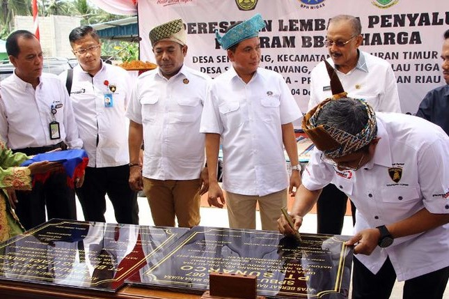

<!DOCTYPE html PUBLIC "-//W3C//DTD XHTML 1.0 Transitional//EN" "http://www.w3.org/TR/xhtml1/DTD/xhtml1-transitional.dtd">
<html xmlns="http://www.w3.org/1999/xhtml">
<head>
<title>TCHD News</title>
<meta name="ROBOTS" content="NOINDEX, NOFOLLOW" />
<!-- CSS styles for standard search box -->
<style type="text/css">
	#tfheader{
		background-color:#c3dfef;
	}
	#tfnewsearch{
		float:right;
		padding:20px;
	}
	.tftextinput{
		margin: 0;
		padding: 5px 15px;
		font-family: Arial, Helvetica, sans-serif;
		font-size:14px;
		border:1px solid #0076a3; border-right:0px;
		border-top-left-radius: 5px 5px;
		border-bottom-left-radius: 5px 5px;
	}
	.tfbutton {
		margin: 0;
		padding: 5px 15px;
		font-family: Arial, Helvetica, sans-serif;
		font-size:14px;
		outline: none;
		cursor: pointer;
		text-align: center;
		text-decoration: none;
		color: #ffffff;
		border: solid 1px #0076a3; border-right:0px;
		background: #0095cd;
		background: -webkit-gradient(linear, left top, left bottom, from(#00adee), to(#0078a5));
		background: -moz-linear-gradient(top,  #00adee,  #0078a5);
		border-top-right-radius: 5px 5px;
		border-bottom-right-radius: 5px 5px;
	}
	.tfbutton:hover {
		text-decoration: none;
		background: #007ead;
		background: -webkit-gradient(linear, left top, left bottom, from(#0095cc), to(#00678e));
		background: -moz-linear-gradient(top,  #0095cc,  #00678e);
	}
	/* Fixes submit button height problem in Firefox */
	.tfbutton::-moz-focus-inner {
	  border: 0;
	}
	.tfclear{
		clear:both;
	}
</style>
</head>
<body>
	<!-- HTML for SEARCH BAR -->
	<div id="tfheader">
		<form id="tfnewsearch" method="get" action="google.">
		        <input type="text" class="tftextinput" name="q" size="21" maxlength="120"><input type="submit" value="search" class="tfbutton">
		</form>
	<div class="tfclear"></div>
	</div>
</body>
</html>


<meta http-equiv="Content-Type" content="text/html; charset=utf-8" />
<title>TCHD News</title>
<meta name="keywords" content="" />
<meta name="description" content="" />
<!--
Template 2060 Newspaper 
http://www.tooplate.com/view/2060-newspaper
-->
<link href="tooplate_style.css" rel="stylesheet" type="text/css" />

<link rel="stylesheet" href="nivo-slider.css" type="text/css" media="screen" />
<link rel="stylesheet" type="text/css" href="ddsmoothmenu.css" />


<script type="text/javascript" src="js/jquery.min.js"></script>
<script type="text/javascript" src="js/ddsmoothmenu.js">

/***********************************************
* Smooth Navigational Menu- (c) Dynamic Drive DHTML code library (www.dynamicdrive.com)
* This notice MUST stay intact for legal use
* Visit Dynamic Drive at http://www.dynamicdrive.com/ for full source code
***********************************************/

</script>

<script type="text/javascript">

ddsmoothmenu.init({
	mainmenuid: "tooplate_menu", //menu DIV id
	orientation: 'h', //Horizontal or vertical menu: Set to "h" or "v"
	classname: 'ddsmoothmenu', //class added to menu's outer DIV
	//customtheme: ["#1c5a80", "#18374a"],
	contentsource: "markup" //"markup" or ["container_id", "path_to_menu_file"]
})

</script> 


</head>

<body>

<div id="tooplate_wrapper">
	
    <div id="tooplate_header">
        <div id="site_title"><h1></h1></div>
        <div id="tooplate_menu" class="ddsmoothmenu">
            <ul>
                <li><a href="index.html" class="selected">Home</a></li>
               
           </ul>
               
            <br style="clear: left" />
        </div> <!-- end of tooplate_menu -->
    </div> <!-- END of tooplate_header -->
    
    <div id="tooplate_main">
		<div id="slider-wrapper">
        
            <div id="slider" class="nivoSlider">
                
                
                
                
            </div>
                    
        </div>
        <script type="text/javascript" src="js/jquery-1.4.3.min.js"></script>
		<script type="text/javascript" src="js/jquery.nivo.slider.pack.js"></script>
        <script type="text/javascript">
        $(window).load(function() {
            $('#slider').nivoSlider();
        });
        </script>
        
        
        
        <div class="col one_third no_margin_right">
        	<a href="#"></a>
        </div>
        
        <div class="cleaner h30"></div>
        
        <div class="newscol col half">
	        <h2>Business</h2>
            <div class="newsbox col one_fourth">
            	<a href="fullpost1.html"></a>
                <h6><a href="fullpost1.html">Laksanakan Program BBM Satu Harga </a></h6>
                <p>Erry Widiastono, General Manager MOR I PT Pertamina (Persero)</p>
           	  <div class="cleaner"></div>
            </div>
            <div class="newsbox col one_fourth no_margin_right">
            	<a href="fullpost2.html"></a>
                <h6><a href="fullpost2.html">Bukan karena Tekanan Daya Beli, Ini Alasan GAP Indonesia Tutup</a></h6>
              <p>Toko ritel GAP, </p>
           	  <div class="cleaner"></div>
            </div>
            <div class="newsbox col one_fourth">
            	<a href="fullpost3.html"></a>
                <h6><a href="fullpost3.html">Tahun Depan AirAsia Terbangi Lhokseumawe-Jakarta</a></h6>
              <p>Maskapai Air Asia akan membuka rute penerbangan Bandara Malikussaleh</p>
           	  <div class="cleaner"></div>
            </div>
            <div class="newsbox col one_fourth no_margin_right">
            	<a href="fullpost4.html"></a>
                <h6><a href="fullpost4.html">Optimalkan Aset, Pertamina Operasikan Bandar Udara Tanjung Warukin</a></h6>
              <p>JAKARTA, KOMPAS.com – Guna mengoptimalisasi aset perseroan,  PT Pertamina(Persero) </p>
           	  <div class="cleaner"></div>
            </div>
        </div>
        
        
        
        <div class="newscol col half">
	        <h2>Political</h2>
            <div class="newsbox col one_fourth">
            	<a href="fullpost.html"></a>
                <h6><a href="fullpost.html">TAM Segera Perbaiki Fortuner Milik Konsumen yang Protes </a></h6>
              <p>Konsumen Toyota Fortuner yang Kecewa pada TAM</p>
           	  <div class="cleaner"></div>
            </div>
            <div class="newsbox col one_fourth no_margin_right">
            	<a href="fullpost5.html"></a>
                <h6><a href="fullpost5.html">Ngantor di Kepulauan Seribu, Sandi Sebut Tak Ada Tambahan Anggaran </a></h6>
              <p>Jakarta - Wakil Gubernur DKI Jakarta Sandiaga Uno memastikan tak akan ada penambahan anggaran untuk,</p>
           	  <div class="cleaner"></div>
            </div>
            <div class="newsbox col one_fourth">
            	<a href="fullpost6.html"></a>
                <h6><a href="fullpost6.html">Diisukan Akan Mundur, GMPG Minta Setnov Segera Buat Surat Wasiat </a></h6>
              <p>Gerakan Muda Partai Golkar (GMPG) angkat bicara soal isu yang menyebut Setya Novanto (Setnov) bakal mundur dari tahta Ketua Umum Partai Golkar.</p>
           	  <div class="cleaner"></div>
            </div>
            <div class="newsbox col one_fourth no_margin_right">
            	<a href="fullpost7.html"></a>
                <h6><a href="fullpost7.html">SOKSI Ingin Airlangga agar Golkar Tetap Dukung Jokowi di 2019 </a></h6>
              <p>SOKSI mengingatkan, agar Airlangga Hartarto tetap membawa Partai Golkar mendukung Presiden Jokowi di Pemilu Presiden (Pilpres) 2019 mendatang.</p>
           	  <div class="cleaner"></div>
            </div>
        </div>
        
        

		<div class="cleaner"></div>
        
        <div class="col one_third">
        	<h5>Recent Posts</h5>
            <div class="rp_pp">
                <a href="fullpost2.html">Bukan karena Tekanan Daya Beli, Ini Alasan GAP Indonesia Tutup</a>
                <p>04/12/2017, 12.05WIB 0Comments</p>
                <div class="cleaner"></div>
            </div>
            <div class="rp_pp">
                <a href="fullpost3.html">Tahun Depan AirAsia Terbangi Lhokseumawe-Jakarta.</a>
                <p>04/12/2017, 10:48 WIB 0Comments</p>
                <div class="cleaner"></div>
            </div>
            <div class="rp_pp">
                <a href="fullpost4.html">Optimalkan Aset, Pertamina Operasikan Bandar Udara Tanjung Warukin.</a>
                <p>05/12/2017, 10:00 WIB 0Comments</p>
                <div class="cleaner"></div>
            </div>
        </div>
        
        <div class="col one_third">
        	<h5>Popular Posts</h5>
            <div class="rp_pp">
                <a href="fullpost6.html">Diisukan Akan Mundur, GMPG Minta Setnov Segera Buat Surat Wasiat.</a>
                <p>05/12/2017, 09:55 WIB 0Comments</p>
                <div class="cleaner"></div>
            </div>
            <div class="rp_pp">
                <a href="fullpost5.html">Ngantor di Kepulauan Seribu, Sandi Sebut Tak Ada Tambahan Anggaran.</a>
                <p>05/12/2017, 12:07 WIB 0Comments</p>
                <div class="cleaner"></div>
            </div>
            <div class="rp_pp">
                <a href="fullpost7.html">SOKSI Ingin Airlangga agar Golkar Tetap Dukung Jokowi di 2019</a>
                <p>05/12/2017, 04:31 WIB 0Comments</p>
                <div class="cleaner"></div>
            </div>
        </div>
        
        
       
        <div class="cleaner"></div>
	</div> <!-- END of tooplate_main -->   
    
</div> <!-- END of tooplate_wrapper -->

<div id="tooplate_bottom_wrapper">
	<div id="tooplate_bottom">
    	<div class="col one_fourth">
        	<h4>Categories</h4>
            <ul class="footer_list">
            	<li><a href="#">Business</a></li>
                <li><a href="#">Politics</a></li>
			</ul>
        </div>
        <div class="col one_fourth">
        	<h4>Pages</h4>
            <ul class="footer_list">
            	<li><a href="index.html">Home</a></li>
			</ul>
        </div>
        <div class="col one_fourth">
        	<h4>Follow Us</h4>	
            
            <div class="footer_social_button">
                <a href="#"></a>
                <a href="#"></a>
                <a href="#"></a>
                <a href="#"></a>
                <a href="#"></a>
			</div>
            
        </div>
        
        
<div id="tooplate_footer_wrapper">
	<div id="tooplate_footer">
    	 Copyright © 2017 TCHD News
    </div> <!-- END of tooplate_footer -->
</div> <!-- END of tooplate_footer_wrapper -->

</body>
</html>